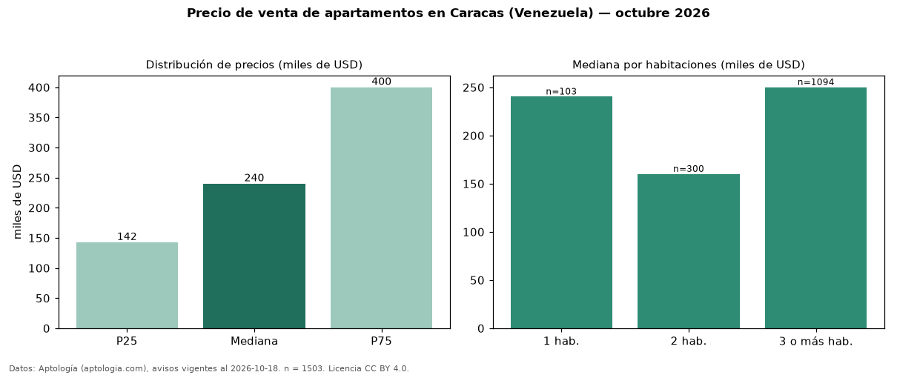

Precio de venta de apartamentos en Caracas (Venezuela) — octubre 2026
Con 1.503 avisos vigentes, el precio mediano de apartamentos en venta en Caracas (Venezuela) es USD 240.000. Por metro cuadrado, la mediana es USD 1.400/m² (n = 1464 avisos con área). Tiene 5 zonas con al menos 30 avisos de apartamentos en venta; la más cara es Chacao (USD 467.040) y la más económica Sucre (USD 131.000). La mediana de toda la vivienda en venta de Caracas (USD) es USD 299.000; los apartamentos quedan −20 %. La mitad central de los avisos va de USD 142.500 a USD 400.000 (razón 2,8), una dispersión alta. El área mediana anunciada es 150 m². El segmento con más oferta es el de 3 o más habitaciones (1.094 avisos, mediana USD 250.000); pasar de 1 habitación a 3 o más habitaciones cambia la mediana +4 %. 95 % de los avisos con el dato declara estacionamiento o cochera. Datos: Aptología (aptologia.com), CC BY 4.0 — https://www.aptologia.com/ve/venta/caracas. Archivos: PDF, CSV con las cifras y gráfica PNG.

| Avisos únicos | 1503 |
|---|---|
| Percentil 25 | COP 142.500 |
| Mediana | COP 240.000 |
| Percentil 75 | COP 400.000 |
| Mediana por m² | COP 1.400 |
Fuente: avisos vigentes de portales inmobiliarios recopilados por Aptología, deduplicados (mínimo 30 avisos únicos por celda). Precios pedidos, no cerrados. Fecha: 2026-10-18.